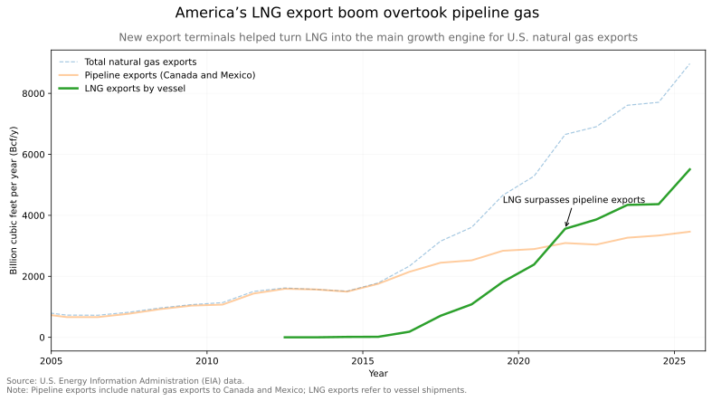
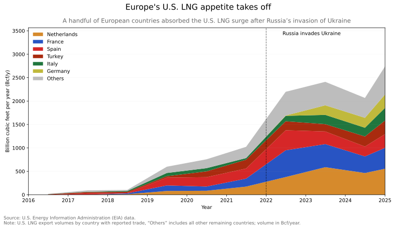
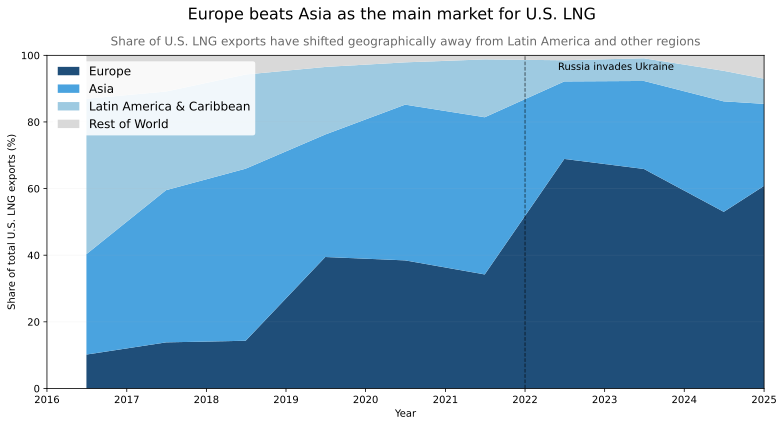

The gas machine came first
The world has seen this story before: oil shocks in the Persian Gulf, Soviet gas deals used to stabilise a failing system, and recent U.S. efforts to revive oil production in Venezuela.
Since the opening of the first export facility in 1969 in Kenai, Alaska, energy has been used as leverage. What is different today is the scale of geopolitics around liquefied natural gas.
The United States did not suddenly become an energy power under Donald Trump. U.S. energy dominance has been built over decades of policy, treating production capacity and market reach as tools of national security. LNG exports by vessel have surged over the past decade, overtaking pipeline flows to Canada and Mexico.

War redirected the flow
The shift also reflects heavy infrastructure investment, with new liquefaction facilities expected through 2029. Favorable contracts and costs helped, but international conflict has played a major role. Russia’s invasion of Ukraine demonstrates the dynamic.
Before 2022, Asia was the main destination for U.S. LNG, accounting for 46 percent of exports between 2017 and 2021.
After the war, flows shifted rapidly to Europe, which received 69 percent of U.S. LNG exports in 2022. The surge was not evenly distributed. A handful of countries, led by the Netherlands, France and Spain, absorbed most of the increase, reflecting existing infrastructure and market capacity.

Europe became the main market
Europe overtook Asia as the main destination for U.S. LNG and is now experiencing managed dependence. It is seeking diversification after relying on Russia for too long, but U.S. shares have also grown consistently over the years.
If the United States is now a system supplier, the lesson extends beyond Europe: control does not guarantee stability. As the Iran war has shown, even conflicts are constrained by supply, pricing and markets—not only geopolitics.

The question is no longer whether countries depend on LNG, but how exposed they are when the system experiences abrupt shocks that bring volatility in a more contested environment.
The era of gas is far from over.